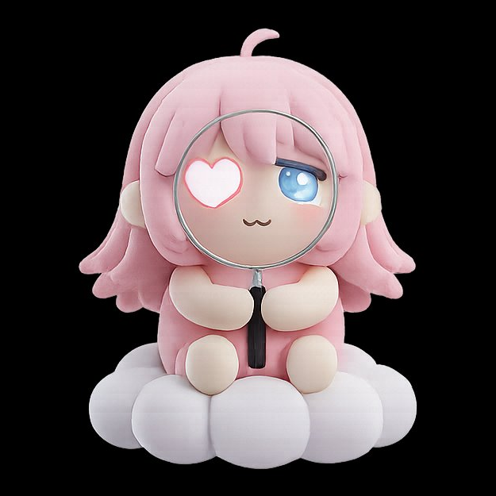
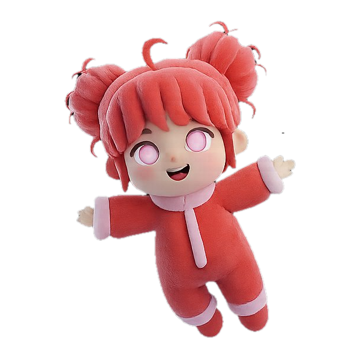
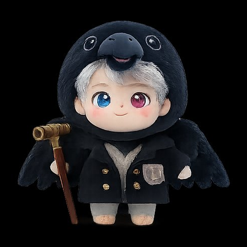
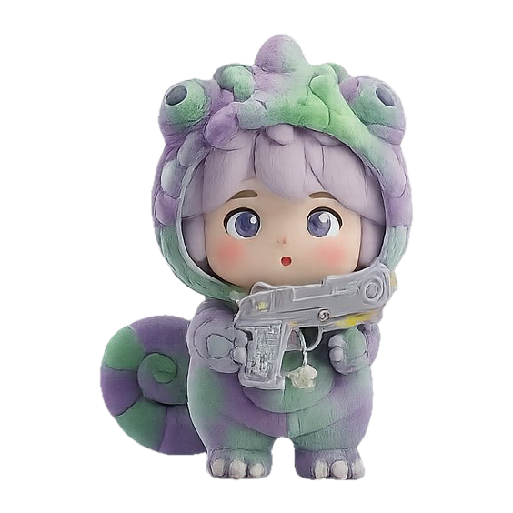
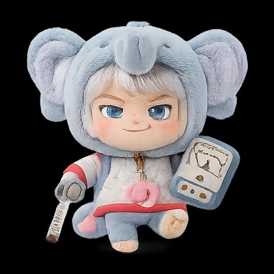
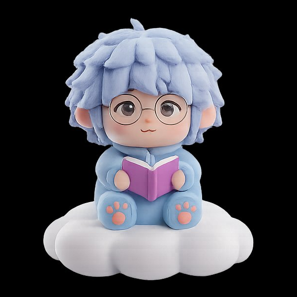
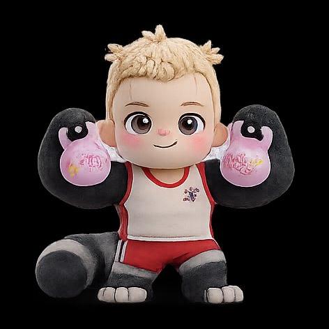
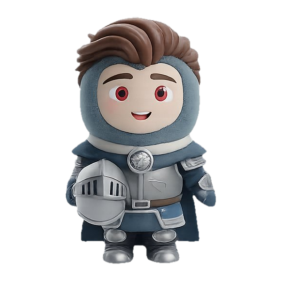
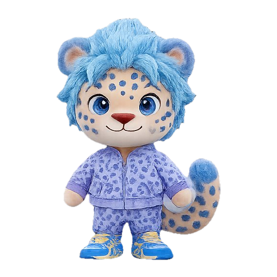

4軸の交差から生まれる16のタイプ。それぞれが、夜という時間に対する独自の「価値観」を持っている。あなたの星と、誰の星が共鳴するか——。

愛と言い張って溺れさせる、かまってほしい盛りの独占者。

流されたいだけのくせに尽くした顔、自分の欲から逃げる卑怯者。

余裕ぶって誘い待ち、本当は誰より飢えてる臆病な策士。

静かな顔して重い独占、意味を欲しがるこじらせの極み。

雰囲気に酔って自分に見惚れる、ナルシスト演出家。
脳内では絶倫、現実では何もできない口だけ妄想家。

見てるだけで何もしない、欲望すら認められない最も臆病なタイプ。

欲しいくせに突き放す、関わる全員を疲弊させる矛盾のカタマリ。

好きが暴走して全方位に引かれる、自覚なきドン引き製造機。

尽くすフリして一番乱れたい、受け身を装う快楽泥棒。

技術で武装して心を見せない、上手いだけで誰の記憶にも残らない人。

体でしか語れない、言葉から逃げ続ける感情オンチ。

自分ルール押し付けて満足、相手を使い捨てオナホ扱いの独裁者。
察するフリしてちゃっかり搾取、受け身を装うフリーローダー。

自分だけ満足して終了、相手を置き去りにする最速の自己中。

勢いだけで後先考えない、自制心が壊れた欲望の奴隷。
このページは、夜キャラ診断（ナイトタイプ診断）に登場する全16種類のナイトタイプ一覧です。沼/塩・S/M・愛/欲・Give/Take の4軸の組み合わせで生まれる16タイプそれぞれの性格・タグライン・あるあるを、カードから個別ページで確認できます。自分のタイプがまだ分からない人は、無料の夜キャラ診断（20問・約2〜3分）からどうぞ。